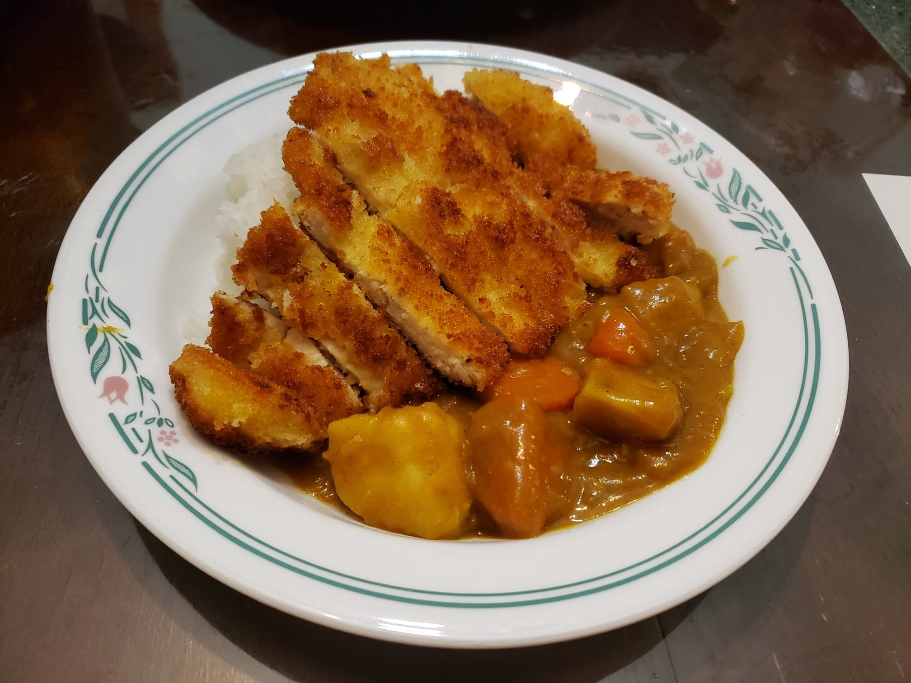

Katsu Curry

Ingredients:
- Chicken katsu, cut into strips
- 4 oz Japanese curry roux packet
- 1 Onion, sliced
- 1 Large potato, cut into bite-sized pieces
- 1 Carrot, cut into bite-sized pieces
- 2 cloves Garlic, minced
- 1 tbsp Olive oil
- 2 cups Water
- 1/4 cup Grated apple (Muji apple preferred)
- 1 tbsp Honey
- Salt, to taste
- Black pepper, to taste
- Optional:Worcestershire sauce or Soy sauce, to taste
Instructions:
- In a pot over medium heat, sauté the onion, potato, carrot, and garlic.
- When the onions start to become translucent and the edges of the potatoes start to become transparent, add the water, honey, and grated apple.
- Bring to a boil and then turn the heat down to low to simmer until the potatoes become soft and all the other ingredients are cooked. (about 15 minutes)
- Turn the heat off, break the curry sauce blocks apart and add to the pot.
- Let the roux dissolve and mix to incorporate it into the curry. Then mix in any salt and pepper to taste. If using, also mix in the worcestershire sauce or soy sauce to taste.
- Serve with the chicken katsu and with white rice.